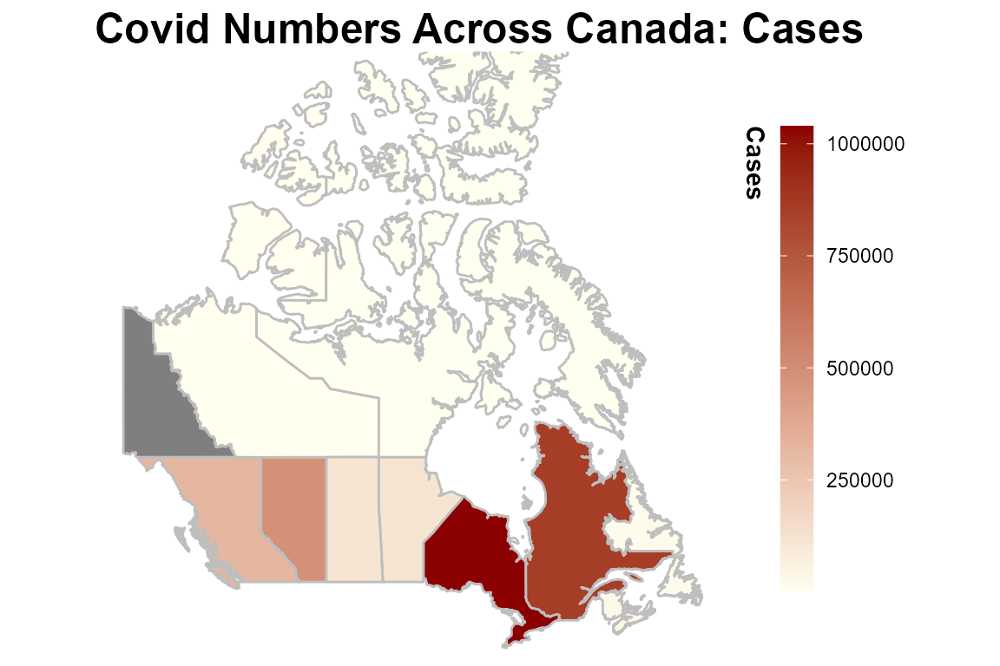
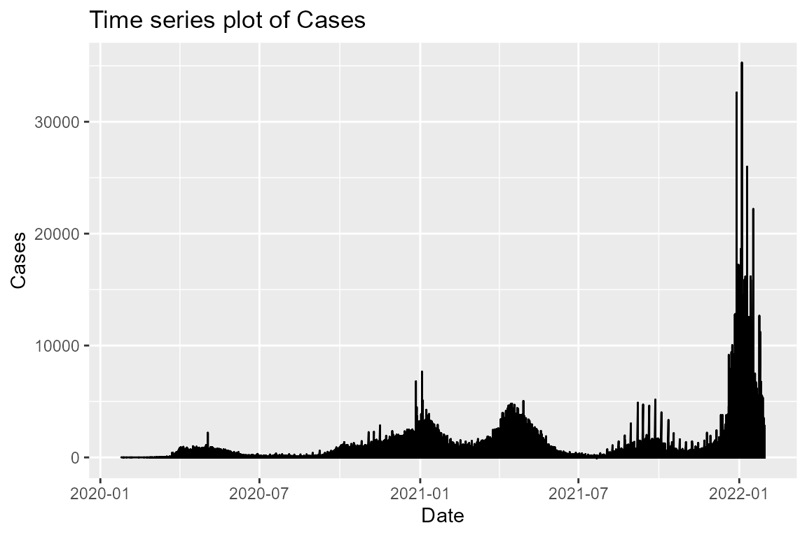

CovidTracker-R.RmdCovidTrackerR is a R package for basic data cleaning, wrangling and plotting of Covid tracking data in Canada. The package will allow you to pull data from the opencovid.ca API, visualize Covid related trends as a timeseries or a map, and calculate summary statistics of the Covid data.
To use this package, follow the installation guide on README and install this package. Then, import the package.
library(CovidTrackerR)
#> Loading required package: tidyverse
#> -- Attaching packages --------------------------------------- tidyverse 1.3.1 --
#> v ggplot2 3.3.5 v purrr 0.3.4
#> v tibble 3.1.4 v dplyr 1.0.7
#> v tidyr 1.1.3 v stringr 1.4.0
#> v readr 2.0.2 v forcats 0.5.1
#> -- Conflicts ------------------------------------------ tidyverse_conflicts() --
#> x dplyr::filter() masks stats::filter()
#> x dplyr::lag() masks stats::lag()get_covid_data:
covid_data_spec <- get_covid_data('active', 'BC', '13-01-2021')
covid_data_spec
#> active_cases active_cases_change cumulative_cases cumulative_deaths
#> 1 6148 -242 59072 1031
#> cumulative_recovered date_active province
#> 1 51893 13-01-2021 BC
covid_data <- get_covid_data()
head(covid_data)
#> cases cumulative_cases date_report province
#> 1 0 0 25-01-2020 Alberta
#> 2 0 0 26-01-2020 Alberta
#> 3 0 0 27-01-2020 Alberta
#> 4 0 0 28-01-2020 Alberta
#> 5 0 0 29-01-2020 Alberta
#> 6 0 0 30-01-2020 Albertaplot_geographical:
covid_df <- CovidTrackerR::get_covid_data()
plot_geographical(covid_df, cases)
#> Registered S3 method overwritten by 'geojsonsf':
#> method from
#> print.geojson geojson
#> Warning: Using `as.character()` on a quosure is deprecated as of rlang 0.3.0.
#> Please use `as_label()` or `as_name()` instead.
#> This warning is displayed once per session.
plot_timeseries:
df <- get_covid_data()
plot_timeseries(df,cases)
calculate_stat_summary:
covid_df <- get_covid_data()
calculate_stat_summary(covid_df,'cases')
#> province start_date end_date count sd min max mean quantile_25
#> 1 Alberta 2020-01-25 2022-01-30 737 1349.10 0 17577 661 18
#> 2 BC 2020-01-25 2022-01-30 737 807.77 0 9332 434 0
#> 3 Manitoba 2020-01-25 2022-01-30 737 436.47 0 7083 161 1
#> 4 New Brunswick 2020-01-25 2022-01-30 737 137.24 -2 2548 38 0
#> 5 NL 2020-01-25 2022-01-30 737 129.75 0 1873 22 0
#> 6 Nova Scotia 2020-01-25 2022-01-30 737 157.65 -1 1184 51 0
#> 7 Nunavut 2020-01-25 2022-01-30 737 10.14 0 140 2 0
#> 8 NWT 2020-01-25 2022-01-30 737 31.58 -4 314 7 0
#> 9 Ontario 2020-01-25 2022-01-30 737 2901.28 0 35287 1409 202
#> 10 PEI 2020-01-25 2022-01-30 737 46.69 0 407 10 0
#> 11 Quebec 2020-01-25 2022-01-30 737 2329.72 -90 17122 1166 158
#> 12 Repatriated 2020-01-25 2022-01-30 737 0.20 0 4 0 0
#> 13 Saskatchewan 2020-01-25 2022-01-30 737 251.78 0 1979 159 8
#> 14 Yukon 2020-01-25 2022-01-30 737 16.12 0 197 4 0
#> quantile_50 quantile_75 current_value
#> 1 206 773 0
#> 2 72 580 0
#> 3 52 170 0
#> 4 3 16 274
#> 5 0 3 0
#> 6 2 17 425
#> 7 0 0 122
#> 8 0 0 0
#> 9 548 1549 1103
#> 10 0 1 0
#> 11 650 1093 2838
#> 12 0 0 0
#> 13 71 220 1347
#> 14 0 1 0